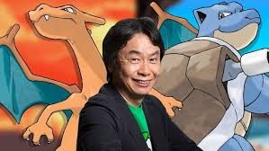
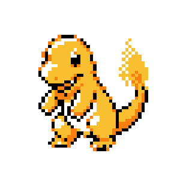
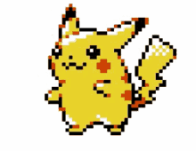
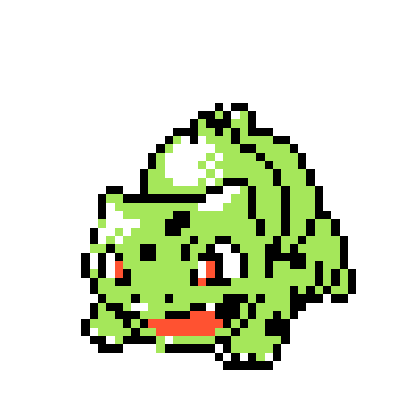
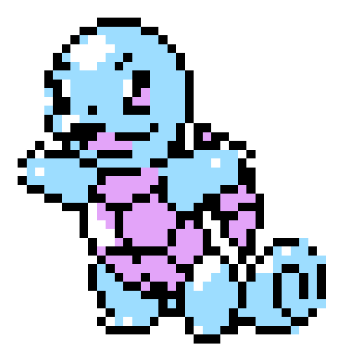
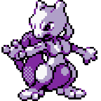
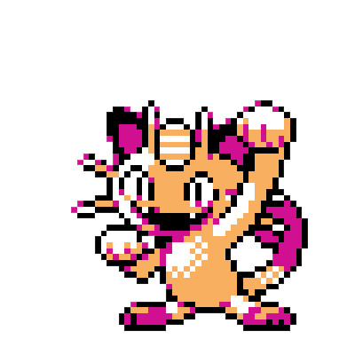

Shigeru Miyamoto es uno de los desarrolladores de videojuegos más influyentes de la historia. Conocido como el padre de los videojuegos modernos , es responsable de franquicias icónicas como Super Mario Bros, The Legend of Zelda, y Donkey Kong. Aunque no participó directamente en la creación de Pokémon Rojo y Azul, su papel como mentor y supervisor en Nintendo tuvo un impacto significativo en la industria y en el éxito de los juegos.
Contribución al Éxito de Pokémon
Pokémon Rojo y Azul fueron desarrollados por Game Freak y liderados por Satoshi Tajiri. Sin embargo, Miyamoto desempeñó un rol importante como asesor en los primeros días del desarrollo. Fue Miyamoto quien sugirió dividir el juego en dos versiones Rojo y Azul, una estrategia que fomentó el intercambio de Pokémon entre jugadores, convirtiéndose en una característica central de la serie. Este enfoque de diseño ayudó a aumentar las ventas y sentó las bases para la conectividad entre jugadores en los videojuegos modernos.
Los pokemons más representativos de ésta generación fueron:
Charmander
Pokémon inicial de tipo fuego, que evoluciona a Charmeleon y Charizard.
Pikachu
La mascota de Pokémon, un Pokémon eléctrico que evoluciona a Raichu.
Bulbasaur
Pokémon inicial de tipo planta, que evoluciona a Ivysaur y Venusaur.
Squirtle
Pokémon inicial de tipo agua, que evoluciona a Wartortle y Blastoise.
Mewtwo
Uno de los Pokémon legendarios más poderosos, creado artificialmente.
Meowth
Pokémon de tipo normal, conocido por su habilidad para hablar el lenguaje humano.
Vídeo
Tabla
| Aportación | Impacto |
|---|---|
| División en dos versiones (Rojo y Azul) | Fomentó el intercambio y la cooperación entre jugadores, lo que se convirtió en una marca distintiva de la serie. |
| Supervisión creativa | Aseguró estándares de calidad altos en Nintendo, influyendo en la experiencia de juego inmersiva de Pokémon. |
| Colaboración entre Nintendo y Game Freak | Facilitó recursos técnicos y apoyo logístico, permitiendo a Game Freak desarrollar el concepto único de Pokémon. |
| Enfoque en jugabilidad simple pero profunda | Garantizó que Pokémon fuera accesible para niños, pero con suficiente complejidad para atraer a jugadores mayores. |
| Introducción del concepto de cable link | Impulsó el uso del accesorio Game Boy Link Cable, revolucionando el juego multijugador portátil. |
| Promoción internacional | Su apoyo ayudó a que Pokémon se convirtiera en un fenómeno mundial, llevando el juego más allá de Japón. |
| Mentoría de Satoshi Tajiri | Proporcionó guía a Tajiri, ayudándole a estructurar sus ideas para Pokémon en un producto comercial viable. |
| Innovación en diseño de mundos | Su filosofía de crear mundos vivos influyó en el diseño de las regiones de Kanto, ofreciendo un entorno inmersivo. |
| Estrategias de marketing | Apoyó la creación de múltiples productos relacionados, como cartas coleccionables y la serie animada, ampliando el alcance de Pokémon. |